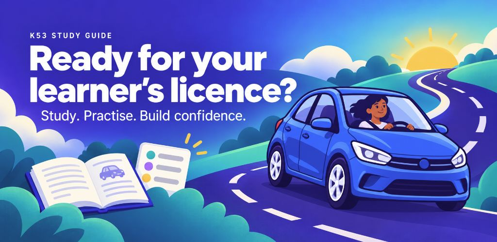
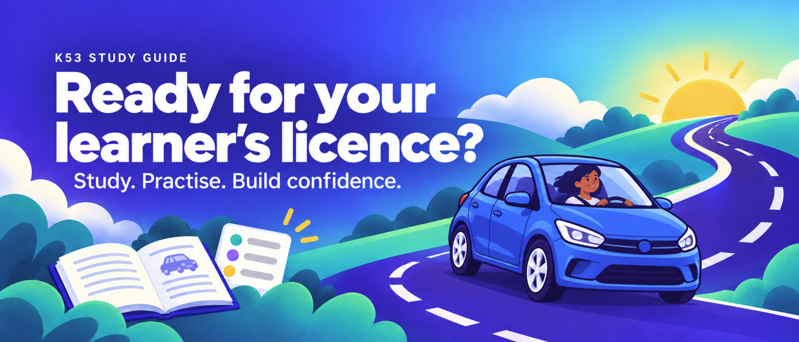
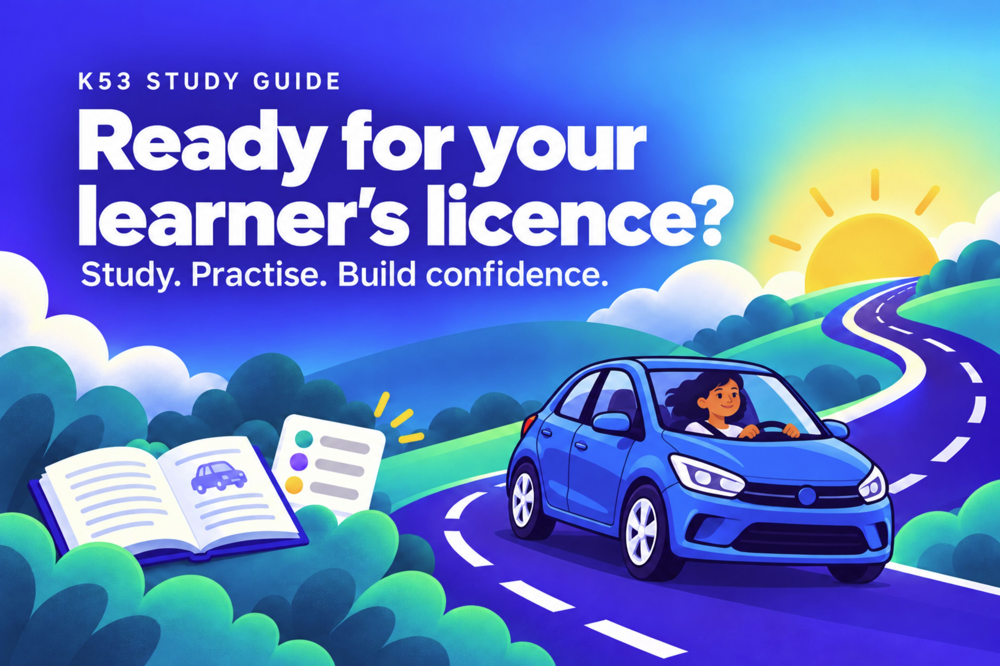

K53 Study Guide — storefront review
8 October 2026 · Approved · Awaiting rebuilt release · Nothing uploaded or published
Prepare for your learner’s licence with confidence. Study, practise and track progress. The smiling driver appears in every landscape graphic.
Full review and release handoff · Marketing strategy · Asset validation
Landscape graphics
Google Play · 1024 × 500


Apple header · 3840 × 1646


Apple search · optional · 3840 × 2560


iPhone — Dynamic Island medium 1206 × 2622


iPhone — Face ID large override 1284 × 2778


iPad 13-inch 2064 × 2752


Android phone 1080 × 1920


Android 7-inch tablet 1440 × 2560


Android 10-inch tablet 1800 × 3200


Proposed copy
Click a field to expand; the linked text file contains only paste-ready copy.
google-play
title · 29 characters
Plain text fileK53 Study Guide: Learner Test
short-description · 76 characters
Plain text fileStudy K53 signs and rules. Practise quizzes. Unlock mock tests with Premium.
full-description · 2161 characters
Plain text filePrepare for your South African learner's licence with K53 Study Guide. Learn the road signs and rules, practise with randomized quizzes, and see your study progress as you go. STUDY AT YOUR OWN PACE Work through road signs, road markings, road signals, rules of the road, vehicle controls and defensive driving. Track the material you have covered and return to your last study topic when you are ready to continue. MAKE PRACTICE PART OF YOUR ROUTINE Choose the topics you want to practise and answer randomized quiz questions. Use short, focused sessions to build familiarity with the material. GET FAMILIAR WITH A MOCK-TEST FORMAT With Premium, practise a structured 64-question mock test across three sections: vehicle controls, rules of the road and road signs. Review your answers and section results to decide what to study next. CHOOSE YOUR LANGUAGE AND YOUR LOOK Use the app in English, Afrikaans, isiZulu or isiXhosa. Switch between light and dark mode to suit your study time. WHAT IS FREE? Study material, progress tracking and quizzes are free. Premium is a one-time in-app purchase that unlocks mock tests and lets you reset your study, quiz and test history. No subscription is required. Start with one topic. Keep practising. Build confidence for test day. INDEPENDENT STUDY APP K53 Study Guide does not represent, and is not affiliated with, endorsed by, authorised by, or acting on behalf of any government entity. It does not provide official learner's licence bookings, applications, licences, government services or official test results. Practice questions and mock tests are for study purposes only. They are not official government test papers. Passing a mock test does not guarantee that you will pass the official learner's licence test. OFFICIAL INFORMATION South African Government learner's licence information: https://www.gov.za/services/driving-licence/apply-learners-licence National Road Traffic Act 93 of 1996: https://www.gov.za/documents/national-road-traffic-act Website: https://k53studyguide.online/ Terms of Use: https://k53studyguide.online/terms.html Privacy Policy: https://k53studyguide.online/privacy.html
release-notes · 245 characters
Plain text fileA refreshed welcome screen makes choosing your study language easier. Study in English, Afrikaans, isiZulu or isiXhosa. Updated translations and interface polish across the app. Fixed quiz and mock-test results disappearing after switching tabs.
apple
name · 29 characters
Plain text fileK53 Study Guide: Learner Test
subtitle · 30 characters
Plain text fileRoad signs, quizzes & practice
promotional-text · 150 characters
Plain text fileBuild confidence for your South African learner's licence: study, track your progress and practise quizzes. Unlock structured mock tests with Premium.
description · 2161 characters
Plain text filePrepare for your South African learner's licence with K53 Study Guide. Learn the road signs and rules, practise with randomized quizzes, and see your study progress as you go. STUDY AT YOUR OWN PACE Work through road signs, road markings, road signals, rules of the road, vehicle controls and defensive driving. Track the material you have covered and return to your last study topic when you are ready to continue. MAKE PRACTICE PART OF YOUR ROUTINE Choose the topics you want to practise and answer randomized quiz questions. Use short, focused sessions to build familiarity with the material. GET FAMILIAR WITH A MOCK-TEST FORMAT With Premium, practise a structured 64-question mock test across three sections: vehicle controls, rules of the road and road signs. Review your answers and section results to decide what to study next. CHOOSE YOUR LANGUAGE AND YOUR LOOK Use the app in English, Afrikaans, isiZulu or isiXhosa. Switch between light and dark mode to suit your study time. WHAT IS FREE? Study material, progress tracking and quizzes are free. Premium is a one-time in-app purchase that unlocks mock tests and lets you reset your study, quiz and test history. No subscription is required. Start with one topic. Keep practising. Build confidence for test day. INDEPENDENT STUDY APP K53 Study Guide does not represent, and is not affiliated with, endorsed by, authorised by, or acting on behalf of any government entity. It does not provide official learner's licence bookings, applications, licences, government services or official test results. Practice questions and mock tests are for study purposes only. They are not official government test papers. Passing a mock test does not guarantee that you will pass the official learner's licence test. OFFICIAL INFORMATION South African Government learner's licence information: https://www.gov.za/services/driving-licence/apply-learners-licence National Road Traffic Act 93 of 1996: https://www.gov.za/documents/national-road-traffic-act Website: https://k53studyguide.online/ Terms of Use: https://k53studyguide.online/terms.html Privacy Policy: https://k53studyguide.online/privacy.html
keywords · 99 characters
Plain text filesouth africa,licence,license,driving,exam,mock,vehicle,controls,traffic,rules,permit,afrikaans,zulu
whats-new · 245 characters
Plain text fileA refreshed welcome screen makes choosing your study language easier. Study in English, Afrikaans, isiZulu or isiXhosa. Updated translations and interface polish across the app. Fixed quiz and mock-test results disappearing after switching tabs.